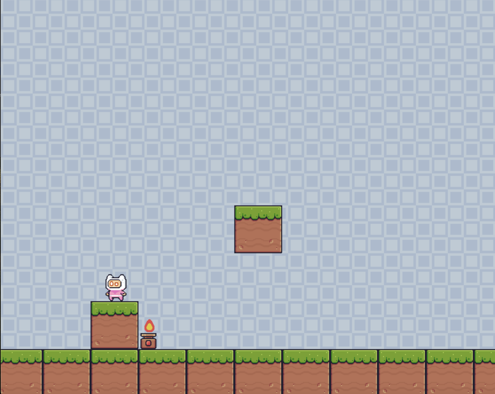

my first major project in coding was a video game i made using python. I used my strong knowledge of python and object oriented programming
to create a "platformer" game where a little character jumps around the screen and blocks.
my second major project is this portfolio that you are reading. I created this portfolio using a html file and styled it using css and javascript.
I have aquired a good grasp of basic python, C, and html through these projects